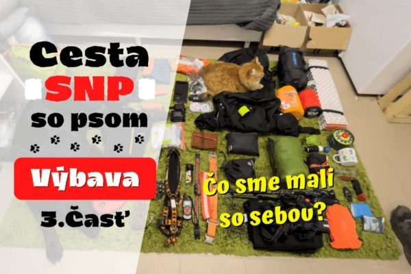

BLOG
KAUZA FIFINKA. Vražedná turistika a zlyhanie štátu
Dňa 17.04.2023 išiel mestom Svidník turista a jeho pes-Fifinka. Pes bol v tom...
PREČÍTAŤUžitočné články, dojímavé príbehy či drsná psia osveta.
Dňa 17.04.2023 išiel mestom Svidník turista a jeho pes-Fifinka. Pes bol v tom...
PREČÍTAŤ
Opäť je tu to ročné obdobie! Slnko svieti, vtáky spievajú a kliešte lezúce na našich...
PREČÍTAŤ
Zážitky z putovania Cestou SNP. Naša životná výzva a odhodlanie.
PREČÍTAŤAko sa pripraviť na najväčšie turistické dobrodružstvo Slovenska s najlepším chlpatým kamošom.
PREČÍTAŤKeď sme prvýkrát spravili ten rozhodujúci krok. História sa začala písať.
PREČÍTAŤ
Príbeh štyroch mačičiek (Berta, Bela, Bejby a Beo), ktoré vďaka láske napokon dostali druhú šancu na život.
PREČÍTAŤ